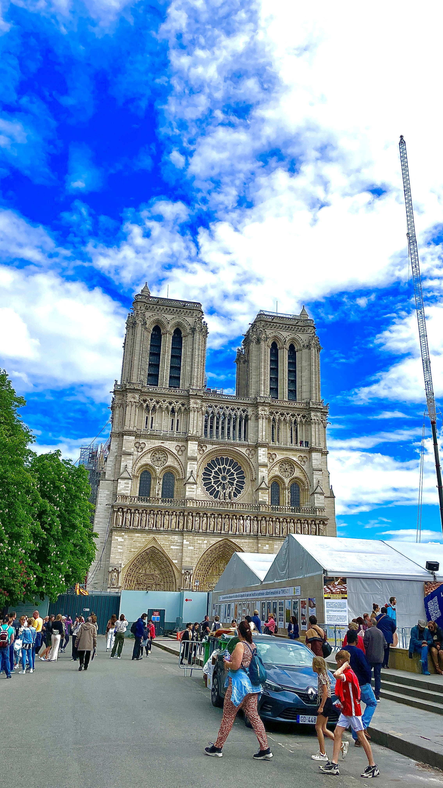
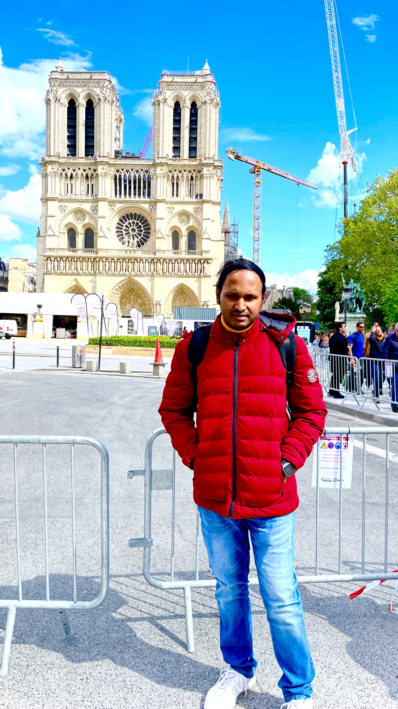
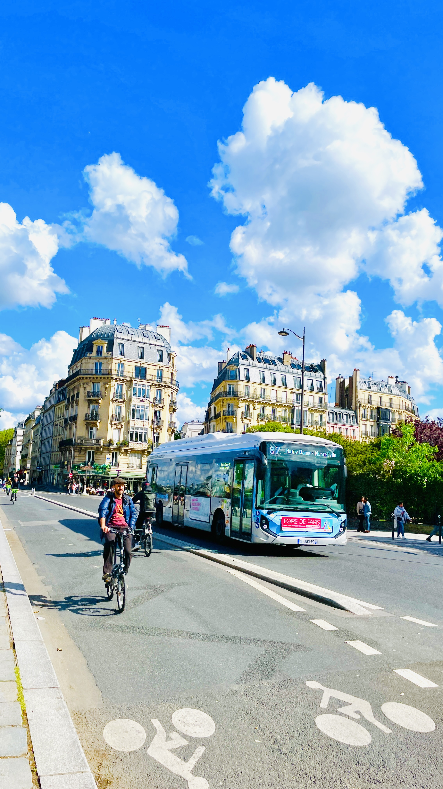
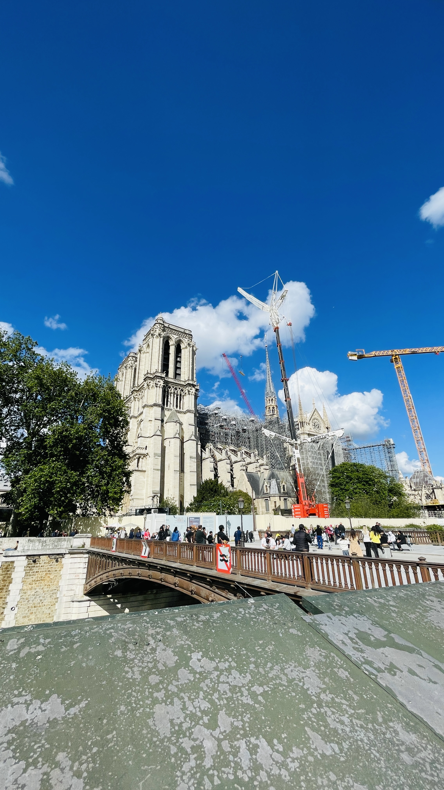
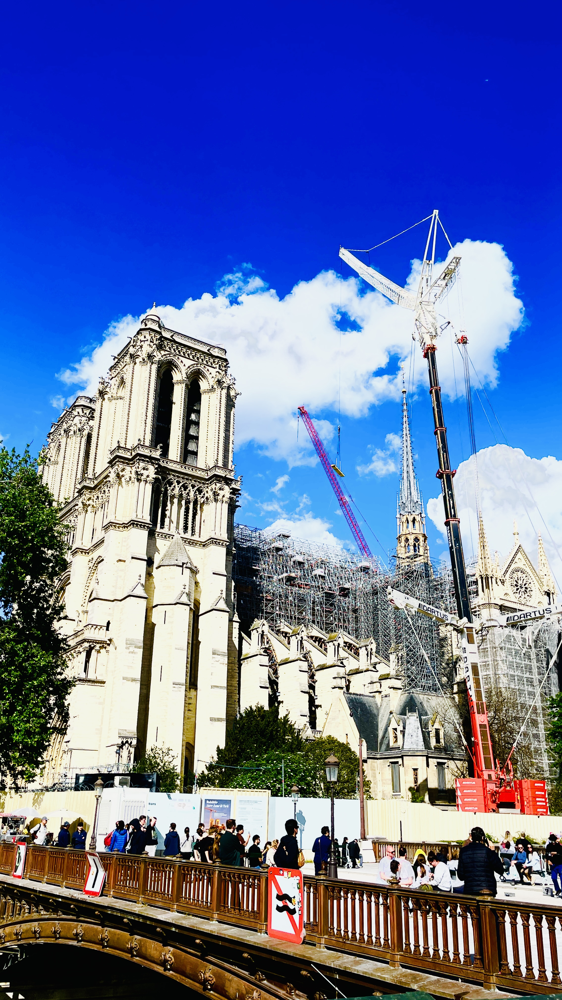

Lucerne 🏞️
🏞️ Lucerne, Switzerland – Where Alpine Charm Meets Medieval Beauty
Nestled between snowcapped peaks and a shimmering lake, Lucerne is the postcard-perfect heart of Switzerland. With its preserved medieval old town, crystal-clear Lake Lucerne, and breathtaking views of Mount Pilatus, this lakeside gem blends natural wonder with cultural richness.
📌 Highlights of Lucerne:
- 🌉 Chapel Bridge (Kapellbrücke): One of Europe’s oldest covered wooden bridges, adorned with 17th-century paintings and flower boxes — an icon of Swiss heritage.
- 🛶 Lake Lucerne: Take a scenic boat cruise or just stroll along the lake promenade for magical reflections of the surrounding Alps.
- ⛰️ Mount Pilatus & Mount Rigi: Ride the world’s steepest cogwheel train or take a cable car for unforgettable panoramic views of central Switzerland.
- 🰠Old Town Charm: Wander cobbled streets, colorful frescoed buildings, hidden fountains, and historic towers like Museggmauer.
- 🦠Lion Monument (Löwendenkmal): A poignant sculpture carved into rock, honoring fallen Swiss Guards — described by Mark Twain as “the most mournful and moving piece of stone in the world.â€
- ğŸ Cultural Scene: Visit the Rosengart Collection, the Swiss Museum of Transport, or time your trip with Lucerne’s famous summer music festival.
🕒 Best Time to Visit:
- 🌸 Spring (April–June): Flowers in bloom, fewer tourists, and mild weather for outdoor exploring.
- 🌠Summer (July–August): Ideal for lake cruises, hiking, festivals, and longer daylight hours.
- 🂠Autumn (September–October): Golden foliage, clear skies, and a relaxed atmosphere.
- ❄️ Winter (December–February): Perfect for nearby skiing and magical Christmas markets in town.
🧳 Things to Keep in Mind:
- 🚶 Walkable City: Lucerne is compact and easily explored on foot — especially the Altstadt (Old Town).
- 💳 Switzerland is Expensive: Plan your budget — many museums and cable cars have steep ticket prices. Consider a Swiss Travel Pass if you’re touring more cities.
- 🚡 Book Mount Pilatus/Rigi in Advance: Especially in summer months — tickets and time slots may fill quickly.
- 📷 Picture-Perfect Spots: Don’t miss sunset by the lake, panoramic views from the city wall, and reflections of the Alps in the water.
- 🥨 Try the Local Flavors: Don’t leave without tasting Rösti, cheese fondue, or a slice of Zuger Kirschtorte — a local cherry liqueur cake.
✨ Final Thoughts
Lucerne is more than just a stop on your Swiss journey — it’s a destination that captures the essence of Switzerland in one place: majestic nature, rich culture, and storybook charm. Whether you come for the mountains, the museums, or the magic of the lake, Lucerne will leave you in awe — and probably planning your return.
Photo Gallery:






Click on the images for full screen.